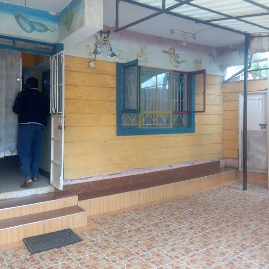

Seven Hours on Mount Kenya
How Kenneth Kemboi ran up Mount Kenya and back in about seven hours, an unsupported record attempt.
Watch and read transcriptTrue stories from across Kenya, told in audio and video, with captions and transcripts for everyone.
Watch the featured story
How Kenneth Kemboi ran up Mount Kenya and back in about seven hours, an unsupported record attempt.
Watch and read transcript
A Nairobi patient, a false diagnosis, and a clinic that was not what it claimed.

Why young Kenyans leave rural areas for the city, and what many find there.
Every story comes with captions, a full transcript and a description of what is on screen. No autoplay. Works with a keyboard and a screen reader.
How we make stories accessible